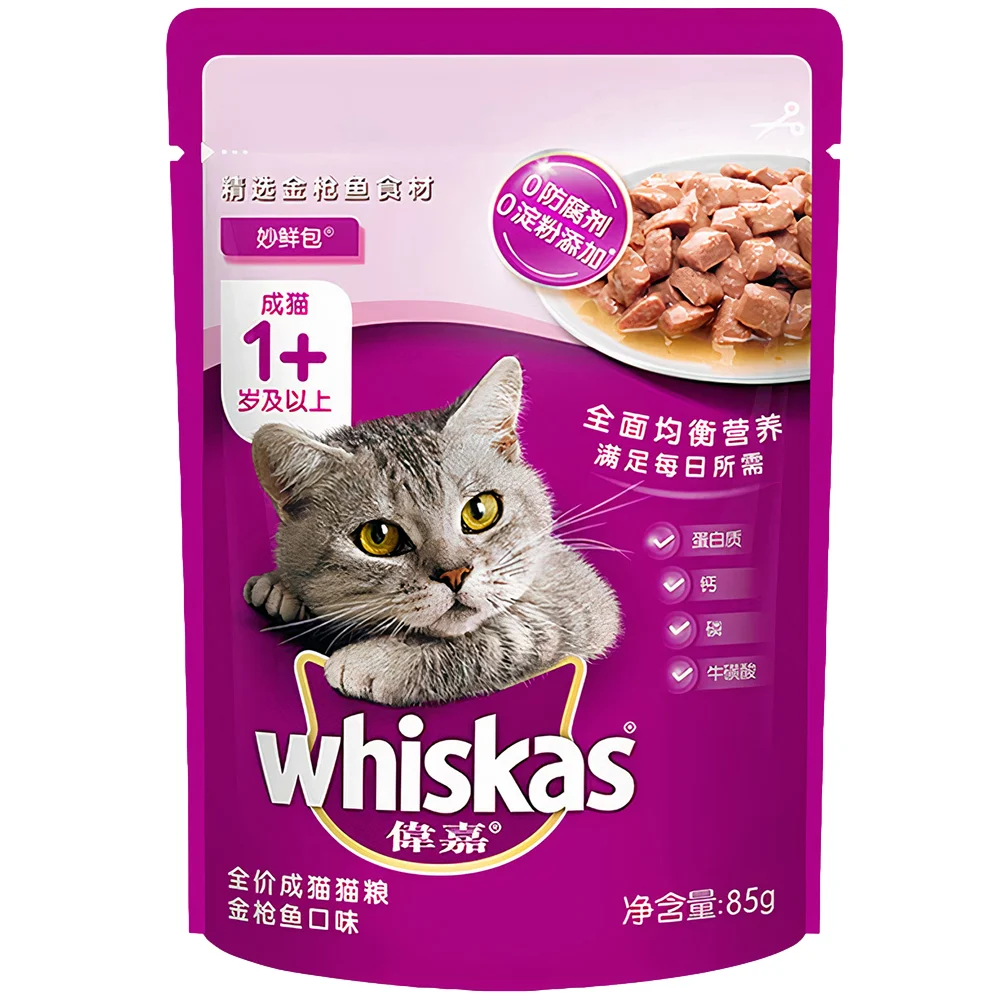

PATE CHO MÈO VỊ NƯỚC SÓT CÁ NGỪ
Thương hiệu: WHISKAS | Tình trạng: Còn hàng
25.000đ
Thông tin cơ bản:
Pate cho mèo vị nước sốt cá ngừ WHISKAS Tuna Flavour Sauce với nhiều hương vị thơm ngon đặc trưng dành riêng cho mèo. Thực phẩm có tác dụng cân bằng dinh dưỡng hàng ngày, lựa chọn những thành phần thịt - cá tươi ngon nhất trong chế biến, giàu protein, các vitamin & khoáng chất thiết yếu và không có chất bảo quản.
Số lượng sản phẩm:
MÔ TẢ CHI TIẾT
Lợi ích chính:
Cung cấp đầy đủ dinh dưỡng cho mèo cưng. Giúp ăn ngon miệng hơn. Đảm bảo cung cấp năng lượng cho thú cưng hoạt động cả ngày. Chăm sóc lông và da khỏe mạnh. Hỗ trợ và kích thích tiêu hóa.
Hướng dẫn sử dụng:
- Sản phẩm có thể cho mèo ăn ngay hoặc trộn với cơm hoặc hạt thức ăn khô.
- Sự lựa chọn dành cho các em mèo biếng ăn.
- Sử dụng ngay sau khi bóc vỏ.
- Trong trường hợp còn thừa cần phải bảo quản trong tủ lạnh không quá 3 ngày.
- Nên hâm ấm trước khi sử dụng.
ĐÁNH GIÁ SẢN PHẨM